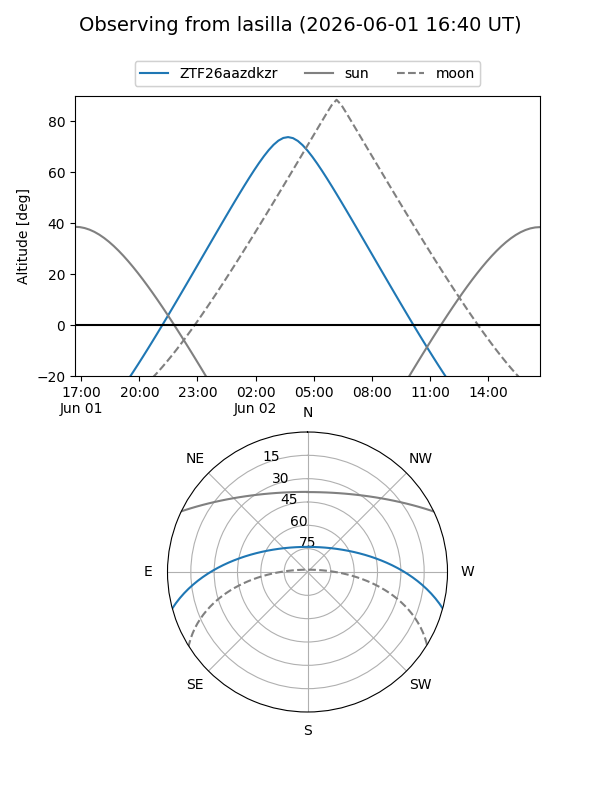
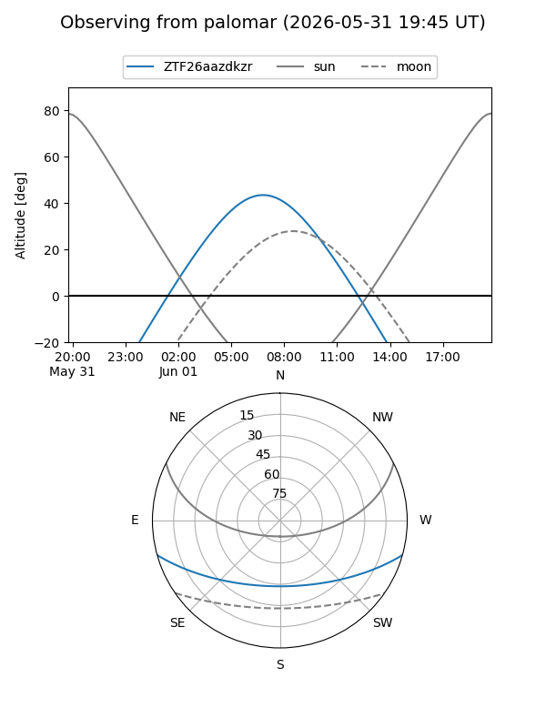

ZTF26aazdkzr
Target ZTF26aazdkzr at 2026-06-01 09:59
Aliases and brokers:
lsst-FINK: link
lsst-Lasair: link
lsst-ALeRCE: link
ztf-FINK: link
ztf-Lasair: link
ztf-ALeRCE: link
alt names
ZTF26aazdkzr (ztf,fink_ztf)
Coordinates:
equatorial (ra, dec) = 234.5388,-13.02671
equatorial (HMS+DMS) = 15:38:09.31,-13:01:36.17
galactic (l, b) = (353.5182,+33.01272)
Flags:
Photometry:
last ztfg=17.59
1 ztfg detections
Lightcurve
Visibility


Additional plots